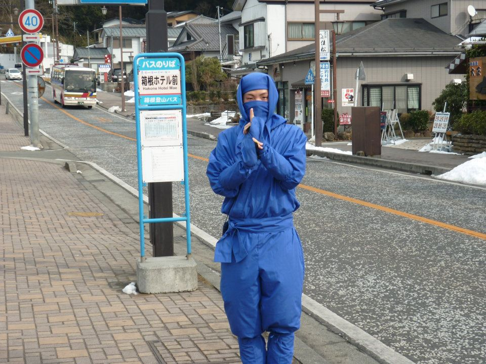
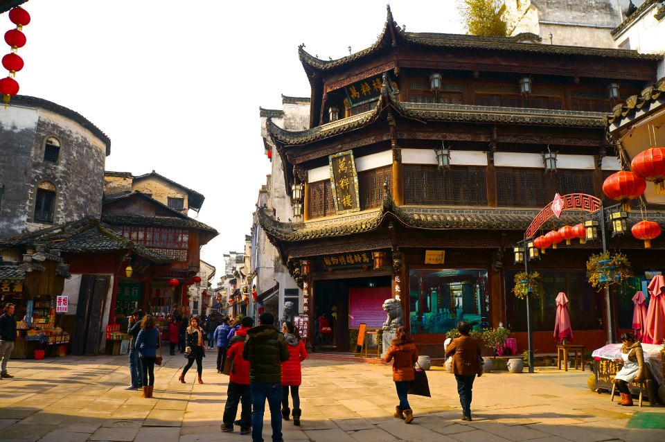
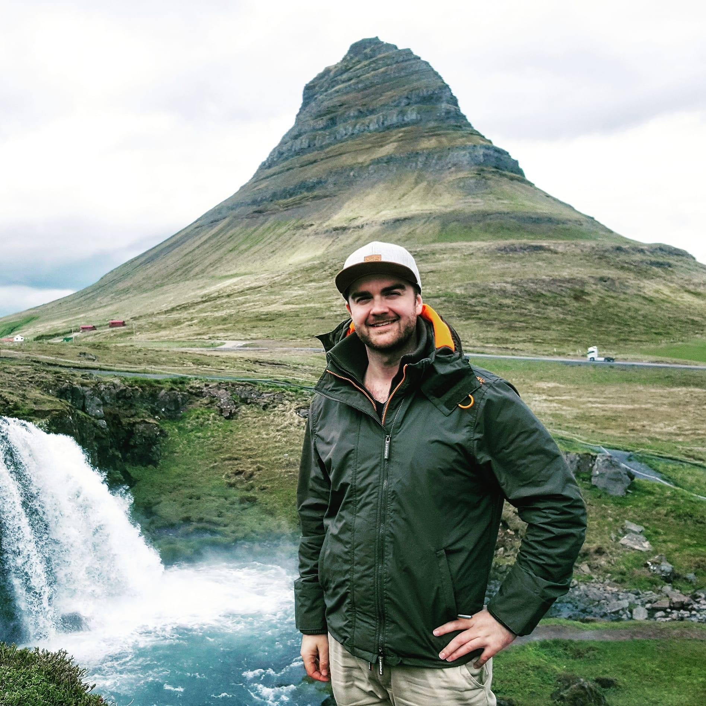
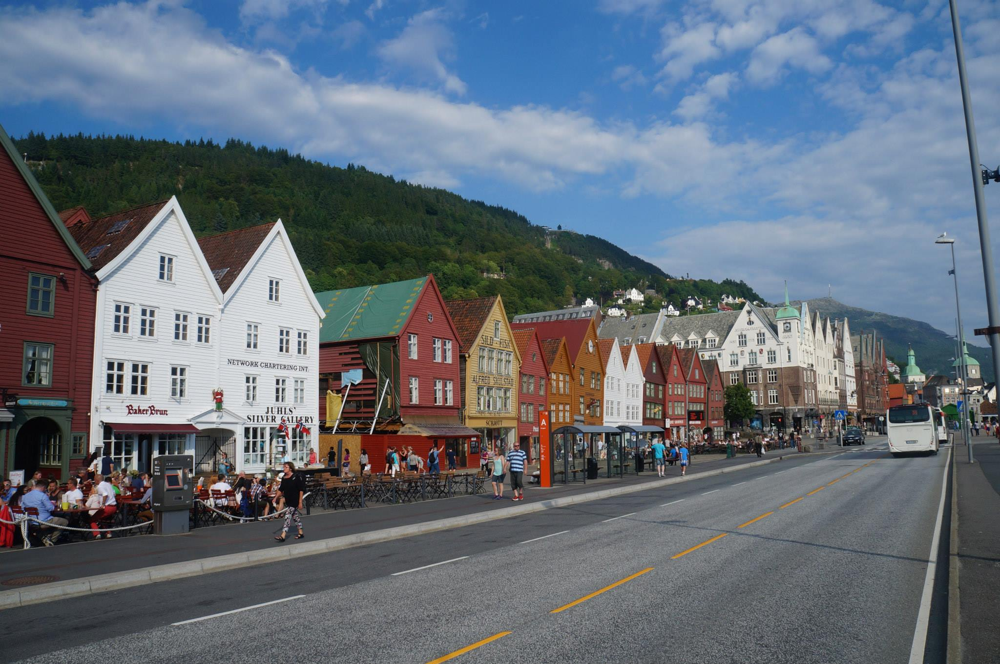

My name is Michael and I am studying full-stack development through Academy Xi! The purpose of this website is to demonstrated what I have learnt with HTML and CSS thus far for the 'Phase 0' project but also to show everyone some of my interests and so that you can learn a little more about me!
My interests include, the following:-
I have consistently travelled overseas for work and pleasure since I was about 18 years old. I love visiting new places, exploring, meeting new people and taking on new challenges. What I love is that you leave everything behind in Australia and you have an entirel new focus whilst you are in a different country. Below I have created a table to provide you with a snapshot of my experiences to date!
| Country | Picture | Description |
|---|---|---|
| England | In 2018 I had a short stop in England to visit one of my friends (and old roommate). We have known each other since 2012 and we still keep in regular contact. | |
| Japan |  | From the time that i visited Japan in 2011. Japan has definitely been one of my favourite countries to date |
| China |  | I lived and worked in Shanghai, China for about 6 months back in 2013. This picture was taken from my trip to Huangshan |
| Iceland |  | I went to Iceland in July 2018 during the Northern Hemisphere's summer. Their summer is more or less compared to our winter and it can be anywhere from 13 degrees to 25 degrees during the day, not to mention they have about 22 hours of daylight each day during summer! You may recognise this mountain is from Game of Thrones (North of the wall where the White Walkers come from) |
| Norway |  | Picturesque Bergen, the UNESCO World Heritage Town in Norway, such a beautiful place |
I have always been someone who 'semi-regularly' goes to the gym and doesn't really get anywhere. One day, I came across one of my friends who was looking quite strong, muscular and fit. He mentioned to me that he did CrossFit and encourage me to give it a go. At the start of 2019, i decided to join a local box and I fell in love with the sport. I love every aspect to it, from the weightlifting, the gymnastics, the competitive scene but especially the Community support!
Olympic ("Olly") lifting is probably my favourite. It is comprised of two movements known as a 'clean' and a 'snatch', both of which require a great deal of strength, balance, power and flexibility to master.
100kg Snatch
135kg Clean
If anyone is in Adelaide and is keen to try out Crossfit, come and visit me at my local box